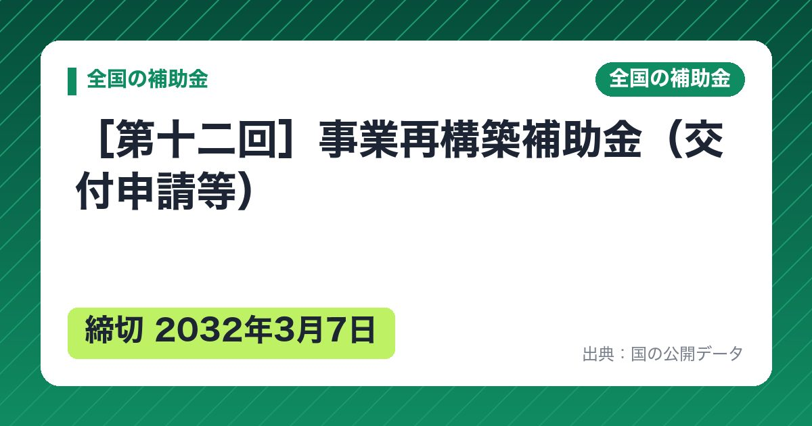

［第十二回］事業再構築補助金（交付申請等）

締切 2032年3月7日｜上限 5億円
事業再構築補助金
この補助金のポイント
第十二回採択者向けの交付申請等の専用サイト
向いている方：第十二回公募で採択され、交付申請等を行う中小企業等
注意点：
- 成長分野進出枠（通常類型）とコロナ回復加速化枠（通常類型・最低賃金類型）の新規申請は2025年11月23日（もしくは補助事業完了期限日）で受付終了。
- 成長分野進出枠（GX進出類型）の新規申請は2026年1月21日（もしくは補助事業完了期限日）、サプライチェーン強靱化枠は2027年3月23日で受付終了。
- 卒業促進上乗せ措置と中長期大規模賃金引上促進上乗せ措置の新規申請は、成長分野進出枠・コロナ回復加速化枠の事業計画期間終了の6か月前で受付終了。
※公募の原文をもとにAIが要約し、数字を原文と照合しています。申請前に必ず公募要領をご確認ください。
概要
| 対象地域 | 全国 |
|---|---|
| 補助上限額 | 5億円 |
| 補助率 | 公募要領をご確認ください。 |
| 受付期間 | 2024年11月8日 〜 2032年3月7日 |
| 対象の従業員数 | 従業員数の制約なし |
| 利用目的 | 新たな事業を行いたい / 販路拡大・海外展開をしたい / 設備整備・IT導入をしたい |
| 対象業種 | 建設業 / 製造業 / 電気・ガス・熱供給・水道業 / 情報通信業 / 複合サービス事業 / サービス業（他に分類されないもの） / 分類不能の産業 / 鉱業、採石業、砂利採取業 / 運輸業、郵便業 / 卸売業、小売業 / 金融業、保険業 / 不動産業、物品賃貸業 / 学術研究、専門・技術サービス業 / 宿泊業、飲食サービス業 / 生活関連サービス業、娯楽業 / 教育、学習支援業 / 医療、福祉 |
| 実施機関 | 事業再構築補助金 |
公募の内容（原文の抜粋）
第十二回応募で採択された補助金交付候補者の交付申請以降の専用サイトです。
「成長分野進出枠（通常類型）」「コロナ回復加速化枠（通常類型）」「コロナ回復加速化枠（最低賃金類型）」の新規申請は 2025年11月23日（もしくは補助事業完了期限日）を、「成長分野進出枠（GX 進出類型）」の新規申請は 2026年1月21日（もしくは補助事業完了期限日）を、「卒業促進上乗せ措置」「中長期大規模賃金引上促進上乗せ措置」の新規申請は成長分野進出枠・コロナ回復加速化枠の事業計画期間終了の6か月前を、「サプライチェーン強靱化枠」の新規申請は 2027年3月23日を以って受付終了となります。 翌日以降の新規申請は受付することができません。ご注意ください。
なお、以下の申請は補助金確定されている場合は新規申請が可能です。
（「承継承認」「ＧビズID引継ぎ依頼」「社名等変更」「担保権設定承認申請」「精算払請求」「採択辞退」）。
※「暫定GビズIDプライムアカウント」は2023年3月31日をもって利用終了となりました。
「暫定GビズIDプライムアカウント」で申請された方は2023年4月14日以降に
新たにGビズIDプライムアカウントを作成しログインしてください。
第十二回の公募回で交付申請等される方の内、次の事業類型で交付申請等される方は下記のサイトからログインの上、申請をしてください。
・ 成長分野進出枠（通常類型）
・ コロナ回復加速化枠（通常類型）
・ コロナ回復加速化枠（最低賃金類型）
［第十二回］事業再構築補助金_成長分野進出枠、コロナ回復加速枠 のページへ移動
第十二回の公募回で交付申請等される方の内、次の事業類型で交付申請等される方は下記のサイトからログインの上、申請をしてください。
・ 成長分野進出枠（GX進出類型）
［第十二回］事業再構築補助金_GX進出類型 のページへ移動
第十二回の公募回で交付申請等される方の内、次の事業類型で交付申請等される方は下記のサイトからログインの上、申請をしてください。
・ 卒業促進上乗せ措置
・ 中長期大規模賃金引上促進上乗せ措置
［第十二回］事業再構築補助金_促進上乗せ措置 のページへ移動
第十二回の公募回で交付申請等される方の内、次の事業類型で交付申請等される方は下記のサイトからログインの上、申請をしてください。
・サプライチェーン強靱化枠
［第十二回］事業再構築補助金_サプライチェーン強靱化枠 のページへ移動
■目的・概要
本事業は、新型コロナウイルス感染症の影響が長期化し、当面の需要や売上の回復が期待し難い中、ポストコロナの時代の経済社会の変化に対応するために新市場進出（新分野展開、業態転換）、事業・業種転換、事業再編、国内回帰・地域サプライチェーン維持・強靱化又はこれらの取組を通じた規模の拡大等、思い切った事業再構築に意欲を有する中小企業等の挑戦を支援することで、日本経済の構造転換を促すことを目的とします。
第12回公募では、既存の事業類型を見直し、今なおコロナの影響を受ける事業者への支援及びポストコロナに対応した事業再構築をこれから行う事業者への支援に重点化を行います。
コロナで抱えた債務の借り換えを行っている事業者等への支援として「コロナ回復加速化枠」を創設し、今なおコロナの影響を受ける事業者への支援を重点化します。また、成長分野への事業再構築やグリーン分野での事業再構築等を行う事業者への支援として「成長分野進出枠」、国内サプライチェーン及び地域産業の活性化に取り組む事業者（製造業）への支援として「サプライチェーン強靱化枠」を措置するなど、ポストコロナに対応した事業再構築をこれから行う事業者の取組を重点的に支援していきます。
■交付規程・補助事業の手引き・様式等
以下のURLをご参照ください。
＜ https://jigyou-saikouchiku.go.jp/documents.html ＞
■申請時の注意事項
jGrantsの動作環境は以下のとおりです。下記のブラウザの最新バージョンをご利用ください。
なお、InternetExplorer等の下記以外のブラウザは、申請上のエラー等が生じますので利用しないでください。
・Windows：Chrome、Firefox、Edge(※1)
・macOS：Chrome、Firefox、Safari
・Android：Chrome
※1 Edgeの「InternetExplorerモード」は申請上のエラー等が生じますので
利用しないでください。
また、文字入力する際に以下の文字が含まれないようにお願いします。
・ダブルクォーテーション：「"」・「“」・「”」
・カンマ：「,」
・タブ：「 」( ホームページ情報等を入力欄にコピー&ペーストをした際に生じる文字)
■これから申請をされる 皆様 へ：補助金の不正受給に関する注意喚起
補助金の申請にあたって、「虚偽の申請による不正受給」、「補助金の目的外利用」や「補助金受給額を不当に釣り上げ、関係者へ報酬を配賦する」といった不正な行為が判明した場合は、交付規程に基づき交付決定取消となるだけでなく、補助金交付済みの場合、加算金を課した上で当該補助金の返還を求めます。
交付決定の取消しを受けた者は、不正内容の公表等を受けることや「補助金等に係る予算の執行の適正化に関する法律」第29条に基づき、5年以下の懲役若しくは100万円以下の罰金または両方に処せられる可能性があります。
■問合せ先
事業再構築補助金事務局ポータルサイトに記載のお問い合わせ先へご連絡ください。
事務局ポータルサイト https://jigyou-saikouchiku.go.jp/
申請前の準備
- GビズIDプライム（電子申請に必須・無料・発行まで1〜2週間かかることあり）：gbiz-id.go.jp
- 直近の決算書（個人事業主は確定申告書の控え）
- 事業計画（何に使い、どう売上・生産性が上がるか）
- 見積書（買う物・頼む工事の）
ほとんどの補助金は、申請時に直近の決算書（個人は確定申告書）が必要で、交付後も経費の帳簿が求められます。
広告準備に使えるサービス：
・無料の会計自動化ソフト マネーフォワード クラウド会計  （法人の帳簿・決算書づくりを自動化）
（法人の帳簿・決算書づくりを自動化）
・やよいの青色申告オンライン  （個人事業主の青色申告に）
（個人事業主の青色申告に）
全国のほかの補助金
- 【令和８年度】二酸化炭素排出抑制対策事業費等補助金（地域再エネ水素ステーション保守点検等支援事業）（締切 2026年11月28日）
- 令和８年度二酸化炭素排出抑制対策事業費等補助金（運輸部門等の脱炭素化に向けた先進的システム社会実装促進事業のうち、農業機械の電動化促進事業）（締切 2026年11月30日）
- 【令和８年度】働き方改革推進支援助成金（締切 2026年11月30日）
- 令和8年度 資源循環分野の脱炭素化促進事業（締切 2026年11月30日）
- 産業車両等の脱炭素化促進事業のうち、空港における脱炭素化促進事業① 空港における再エネ活用型GPU等導入支援（二酸化炭素排出抑制対策事業費等補助金）（締切 2026年11月30日）
- 産業車両等の脱炭素化促進事業のうち、港湾における脱炭素化促進事業（二酸化炭素排出抑制対策事業費等補助金）（締切 2026年11月30日）
- 産業車両等の脱炭素化促進事業のうち、空港における脱炭素化促進事業②空港におけるEV・FCV型車両導入事業（二酸化炭素排出抑制対策事業費等補助金）（締切 2026年11月30日）
- 産業車両等の脱炭素化促進事業のうち、空港における脱炭素化促進事業③空港におけるEV・FCV型車両改造事業（二酸化炭素排出抑制対策事業費等補助金）（締切 2026年11月30日）